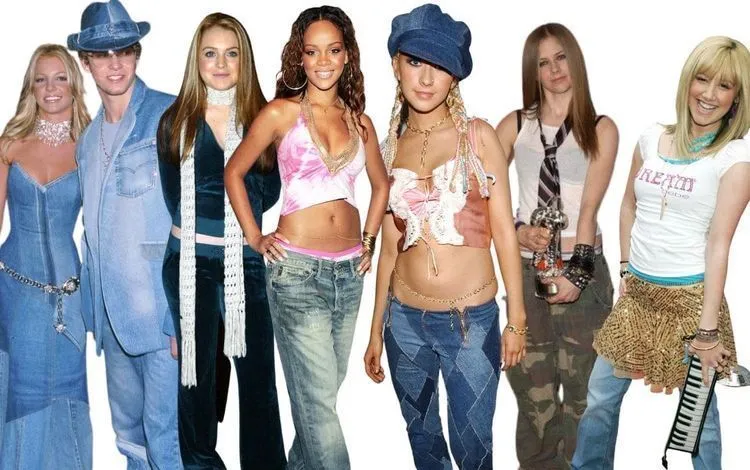
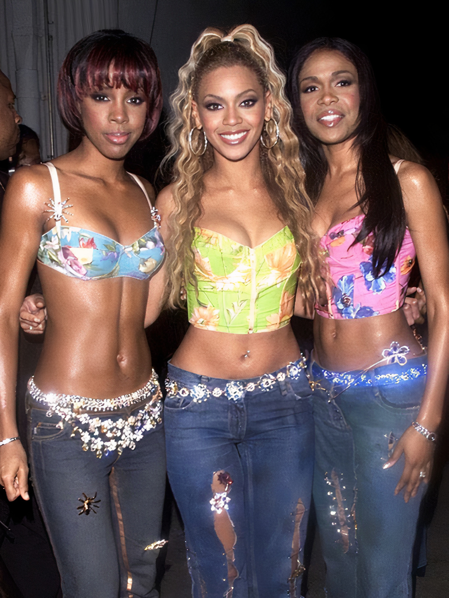
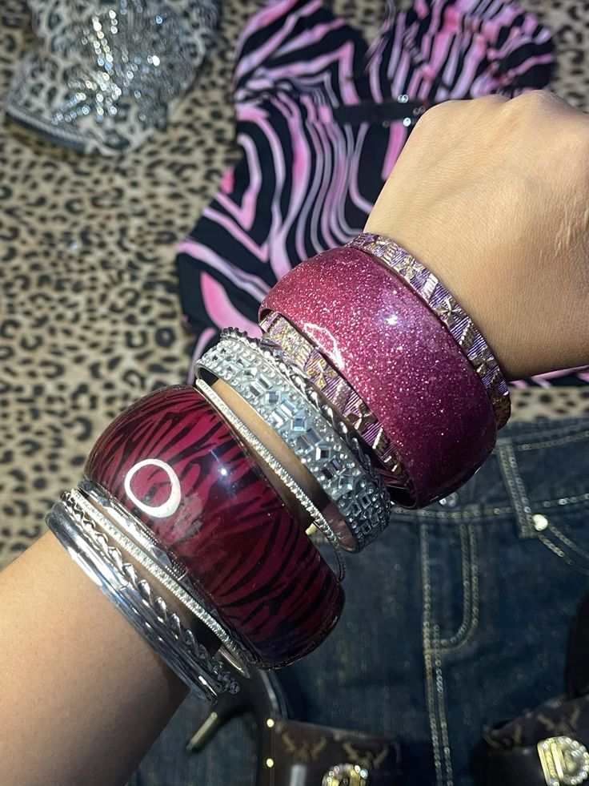
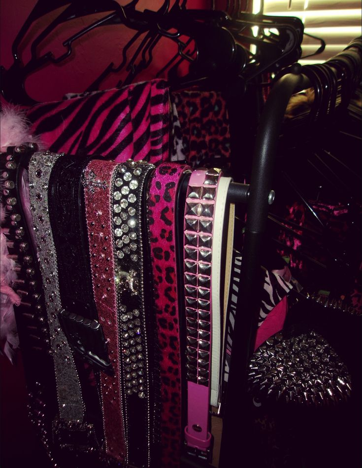
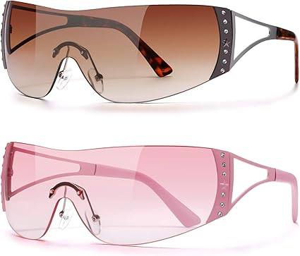
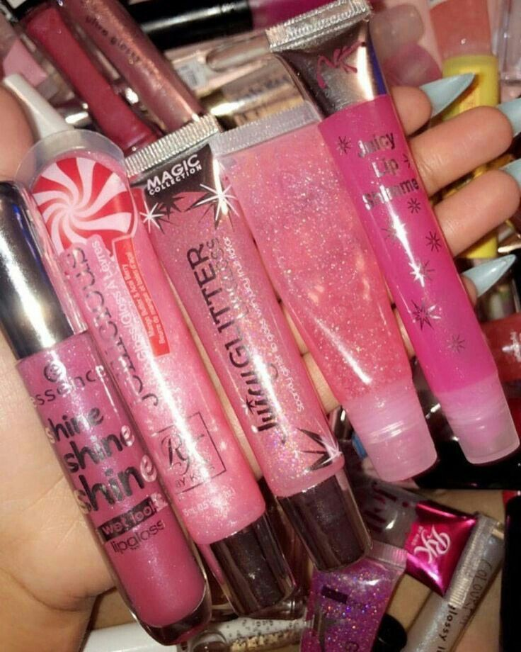
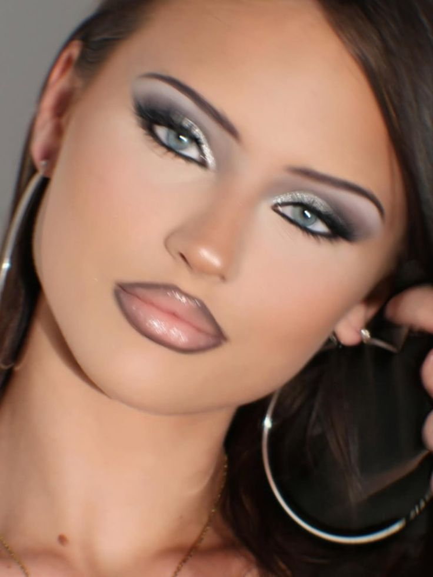
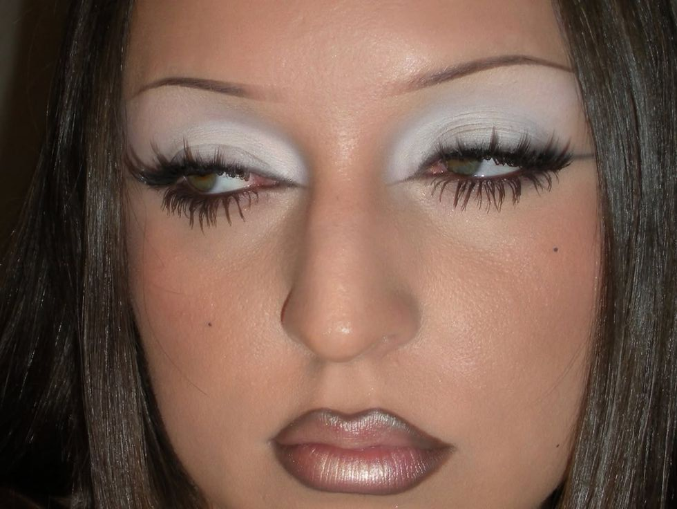

Y2K is back
💿 💿
Looks icônicos, brilho, cultura pop e tudo que marcou os anos 2000 — em um só lugar.
Looks icônicos, brilho, cultura pop e tudo que marcou os anos 2000 — em um só lugar.

A moda dos anos 2000 voltou com tudo 💿✨
As músicas que marcaram uma geração 🎶
Uma era cheia de personalidade 📱
O retorno das bolsas pequenas, cintos de corrente e a estética que marcou os anos 2000.
.jpg)
.jpg)


.jpg)
.jpg)

.jpg)

Prepare o seu MP3! Os sons que definiram a década.
Os anos 2000 foram o começo de um mundo novo — meio bagunçado, colorido, cheio de personalidade e MUITO divertido. A internet ainda era lenta, com aquele barulhinho da conexão, mas isso não impedia ninguém de passar horas online vivendo intensamente cada detalhe.
As pessoas entravam no MSN, colocavam status cheios de emoção, escolhiam uma música que representava o momento e ficavam conversando até tarde. Era tudo muito mais pessoal — cada detalhe dizia algo sobre você.
Os blogs de moda começaram a surgir como diários reais. Não era algo perfeito — era espontâneo, verdadeiro. Fotos com flash estourado, poses no espelho, looks montados com o que tinha no guarda-roupa. E isso era exatamente o charme.
A estética da época era inconfundível: glitter, fundos brilhantes, cores fortes, fontes diferentes, gifs piscando… tudo ao mesmo tempo. Era exagerado, mas era único.
As pessoas saíam muito. Ir ao shopping com as amigas era um evento. Tirar fotos, provar roupas, rir alto, comprar uma bolsinha nova — tudo virava memória. Mas a noite… a noite era outro nível.
As baladas dos anos 2000 eram cheias, animadas e com uma energia que dava pra sentir no corpo. Luzes piscando, pista lotada e todo mundo dançando junto. No Brasil, o fenômeno Furacão 2000 dominava as pistas com batidas marcantes e coreografias que todo mundo sabia.
Era comum ver grupos dançando sincronizados, repetindo passos que viralizavam muito antes das redes sociais como hoje. A música alta, o grave batendo, o calor da pista e aquela sensação de liberdade… era impossível ficar parado.
As pessoas se arrumavam pra sair — maquiagem com gloss, brilho, roupas estilosas, acessórios chamativos. Tudo fazia parte da experiência. Não era só sair, era viver o momento.
O grande nome do pop. Seus looks, coreografias e músicas estavam por toda parte. Ela influenciou uma geração inteira com seu estilo marcante.
Trouxe o glamour e o lifestyle das celebridades para o dia a dia. Com seu estilo “patricinha” cheio de rosa, brilho e luxo, ela transformou a ideia de fama.
Trouxe uma estética mais rebelde, com gravatas, tênis e atitude “não ligo”. Ela representava o lado alternativo da época.
Christina Aguilera, Lindsay Lohan e Hilary Duff também foram referências fortes. Os reality shows ganharam força, aproximando o público desses ícones que eram o reflexo de uma geração inteira.


